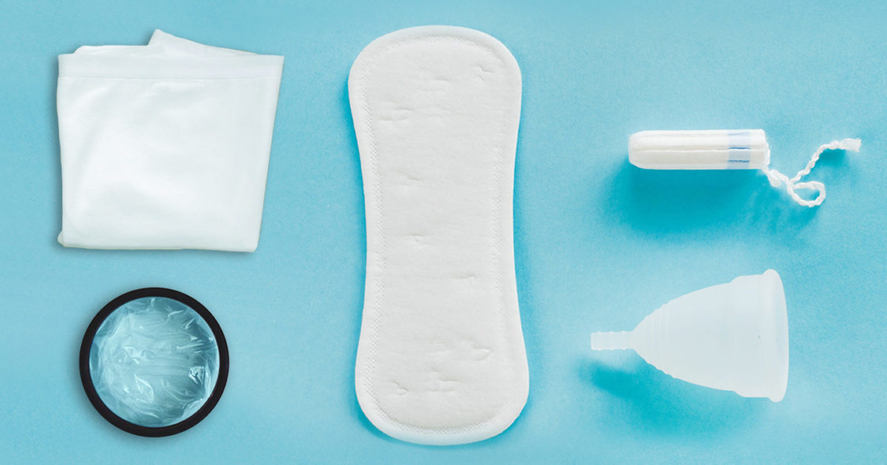
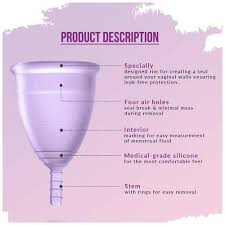

Use Of Products

Menstrual Cups
Although menstrual cups have been on the market since the 1960’s (in the form of an aluminum cup, ouch!), menstrual cups are having a moment. Menstrual cups are made from medical-grade silicone, so they do not dry out the vagina’s natural moisture as a tampon would. Insertion is where many individuals tend to shy away from the cup. To insert the cup, fold it in half like a taco and pinch it between your fingers. Maintaining the pinch, insert the cup into your vagina, and release. The cup uses suction to create a seal between the rim and the vaginal canal, so manufacturers recommend rotating the cup 360 degrees upon insertion to ensure the seal is intact. To remove the cup, break the seal by pinching it before removing.

● How Long do Menstrual Cups Last?
Tips to maintain Menstrual Hygiene
When cared for properly, the DivaCup can last several years. Which is why we recommend that customers inspect the DivaCup regularly for signs of deterioration.
What does that mean exactly? Well, there are a few telltale signs that your menstrual cup has reached the end of its lifespan, including:
● Foul odor
● Heavy staining
● A white powder residue or any flaking on the cup
● Any types of tears or cracks in the rim or the stem of the cup
● A grainy texture
● Sudden leaking where it has not been experienced before
● When should I throw out my old menstrual cup?
There’s no set expiry or lifespan for most menstrual cups, because it really depends on how frequently it is used and how well it is cared for. It’s best to always refer to the manufacturer’s recommendations when it comes to how to care for your cup.
Most menstrual cups can be reused for 5-10 years, but should be replaced if you notice any damage like cracks, tears or holes developing. Even though these might not affect how well the cup performs, it can make the cup harder to clean properly and put you at an increased risk of infections like TSS. You should also dispose of your menstrual cup if you notice it has a smell that can’t be removed with cleaning or if the surface changes texture in any way. Stains on the surface of your menstrual cup are normal and don't necessarily mean it needs to be replaced.
How To Use
● How should I dispose of my old menstrual cup?
Silicone menstrual cups should be cut into small pieces and placed in your household rubbish. If you don’t want to throw it out, a silicone menstrual cup can also be burnt down to ash at home - it takes a while, so is best done in the fireplace over many hours. Or you can always get creative and repurpose your old menstrual cup around the home or in the garden!
TPE menstrual cups can be recycled at any facility that accepts number 7 plastics or can be cut into small pieces and thrown in the rubbish.
Even though some menstrual cups can’t be recycled and are not biodegradable, they are still a great way to save waste when compared to disposable pads and tampons. For every year of using a menstrual cup, you save around 300 disposables from heading to landfill!
Sanitary Napkins
● What Are Pads?
Pads are rectangles of absorbent material that attach to the inside of a girl's underwear and catch menstrual blood. They're sometimes also called sanitary pads or sanitary napkins. Some pads have extra material on the sides. These "wings" fold over the edges of your underwear to help hold the pad in place and prevent leaking.
There are many different types of pads, including:
super
slender
overnight
scented
maxi
mini
Some girls have heavier bleeding with their periods and others have lighter bleeding. And most girls have a light days and heavier days. Pads can vary by size or by absorbency.
● Usage of Pads
Pads should be changed every 3–4 hours, even if you have a light flow. Regular changing prevents buildup of bacteria and stops odor. If you have a heavier flow, you might need to change pads more often to make sure you don't leak.
There are two types of pads that do the same job, but are used a little bit differently.
Disposable pads: Most pads have a sticky strip along the bottom. You peel off the paper strip that covers the adhesive and press the pad into the crotch of your underwear. If the pad has wings, you wrap these around the bottom of the crotch.
To remove the pad, unstick it from your underwear and wrap it in toilet paper. Put it in the trash can or in the special disposal box that's found in most bathroom stalls. Don't try to flush a pad down the toilet because the toilet can become clogged and make a big mess.
Reusable pads: These pads are washed after each time you wear them. They're sold in natural health stores and online. These kinds of pads snap or clip onto a girl's underwear. Girls might use these pads because they feel they're better for the environment or to save money. It's all a matter of personal preference.
Tampoons
● What are tampons—and how are they used
Tampons are one method of absorbing menstrual flow during your period. Tampons are designed to be inserted into the vagina with or without an applicator.
You may be surprised to learn that the FDA regulates tampons as medical devices. Tampons cleared by the FDA are meant to be used one time and then thrown away. No tampon should be used more than once.
Reusable tampons may carry additional risks of infections such as yeast, fungal, and bacterial infections.
While you may have heard about reusable tampons, the FDA has not cleared or approved these products. The FDA discourages the use of reusable tampons.
The only tampons cleared or approved by the FDA are designed for single-use.

Tampon Safety Tips
You may want to talk with your health care provider about whether tampons are right for you. If you use tampons, consider the following:
1. Follow all labeled directions. Even if you have used tampons before, read the instructions in the package.
2. Wash your hands before and after using a tampon. This will help reduce the spread of bacteria.
3.Only use tampons when you have your period. Tampons are not intended to be used at any other time or for any other reason.
4.Change each tampon every 4 to 8 hours. Never wear a single tampon for more than 8 hours at a time.
5.Use the lowest absorbency tampon needed. If you can wear one tampon up to eight hours without changing it, the absorbency may be too high.
6. Contact your health care provider if you have pain, fever or other unusual symptoms. If you have discomfort, pain or other unexpected symptoms like unusual discharge when trying to insert or wear a tampon, or if you have an allergic reaction, stop using tampons and contact your provider.
7. Know the signs of toxic shock syndrome (TSS) and how to reduce your risk. Symptoms and signs of TSS may include a sudden fever (usually 102°F or more), vomiting, diarrhea, fainting or feeling like you are going to faint when standing up, dizziness, or a rash that looks like a sunburn. If you have any of these symptoms during your period or soon after your period, stop using tampons and seek medical attention immediately. To reduce your risk of TSS, use the lowest absorbency tampon necessary, wear a tampon for no more than 8 hours and then throw it away, and use tampons only when you have your period.